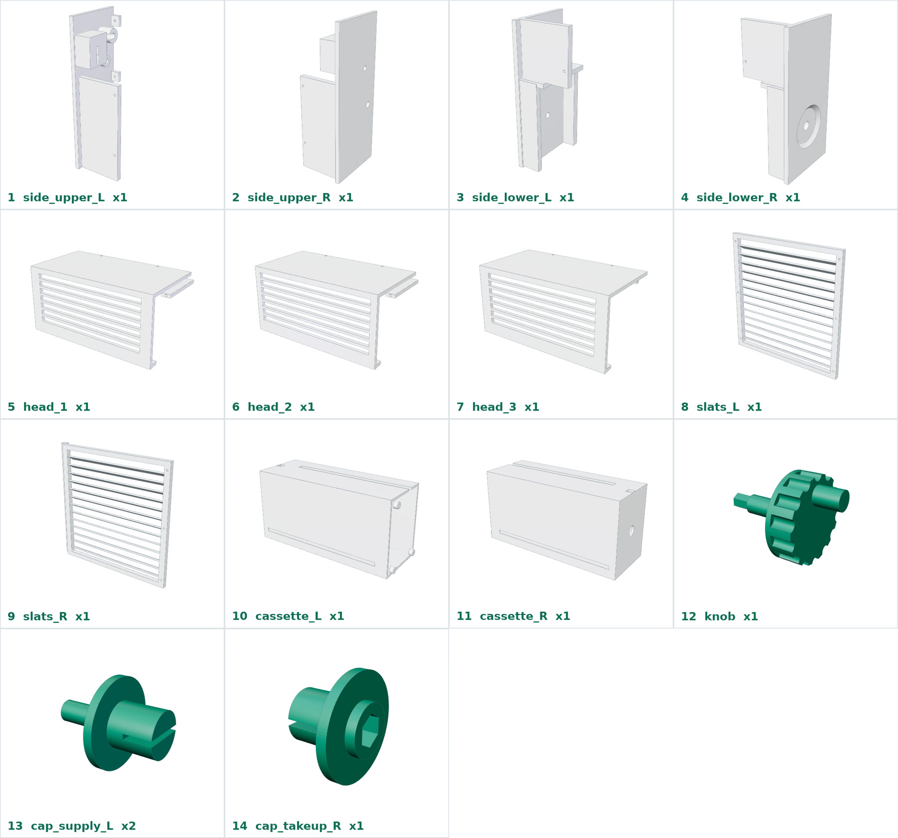

| # | فایل | قطعه | تعداد | ابعاد (mm) | جهت پرینت |
|---|---|---|---|---|---|
| 1 | 01_side_upper_L_x1.stl | دیوارهٔ کناری بالا، چپ | 1 | 240 × 95 × 74 | دیوارهٔ صاف روی بستر |
| 2 | 02_side_upper_R_x1.stl | دیوارهٔ کناری بالا، راست | 1 | 240 × 95 × 74 | دیوارهٔ صاف روی بستر |
| 3 | 03_side_lower_L_x1.stl | دیوارهٔ کناری پایین، چپ | 1 | 200 × 95 × 74 | دیوارهٔ صاف روی بستر |
| 4 | 04_side_lower_R_x1.stl | دیوارهٔ کناری پایین، راست (جای دستگیره) | 1 | 200 × 95 × 74 | دیوارهٔ صاف روی بستر |
| 5 | 05_head_1_x1.stl | سرپوش بالا، تکهٔ چپ | 1 | 190 × 95 × 90 | سقف روی بستر |
| 6 | 06_head_2_x1.stl | سرپوش بالا، تکهٔ وسط | 1 | 190 × 95 × 90 | سقف روی بستر |
| 7 | 07_head_3_x1.stl | سرپوش بالا، تکهٔ راست | 1 | 180 × 95 × 90 | سقف روی بستر |
| 8 | 08_slats_L_x1.stl | پنل تیغهای، نیمهٔ چپ | 1 | 218 × 212 × 16 | صورت جلو روی بستر، بدون ساپورت |
| 9 | 09_slats_R_x1.stl | پنل تیغهای، نیمهٔ راست | 1 | 222 × 218 × 16 | صورت جلو روی بستر، بدون ساپورت |
| 10 | 10_cassette_L_x1.stl | کاست، نیمهٔ چپ | 1 | 248 × 120 × 89 | صورت جلو روی بستر |
| 11 | 11_cassette_R_x1.stl | کاست، نیمهٔ راست | 1 | 248 × 120 × 89 | صورت جلو روی بستر |
| 12 | 12_knob_x1.stl | دستگیره با محور | 1 | 74 × 52 × 52 | دستگیره روی بستر، محور رو به بالا |
| 13 | 13_cap_supply_L_x2.stl | درپوش لولهٔ رول نو | 2 | 39 × 32 × 32 | فلنج روی بستر |
| 14 | 14_cap_takeup_L_x1.stl | درپوش لولهٔ جمعکننده، چپ | 1 | 32 × 32 × 30 | فلنج روی بستر |
| 15 | 15_cap_takeup_R_x1.stl | درپوش لولهٔ جمعکننده، راست (ششگوش) | 1 | 32 × 32 × 22 | فلنج روی بستر |
